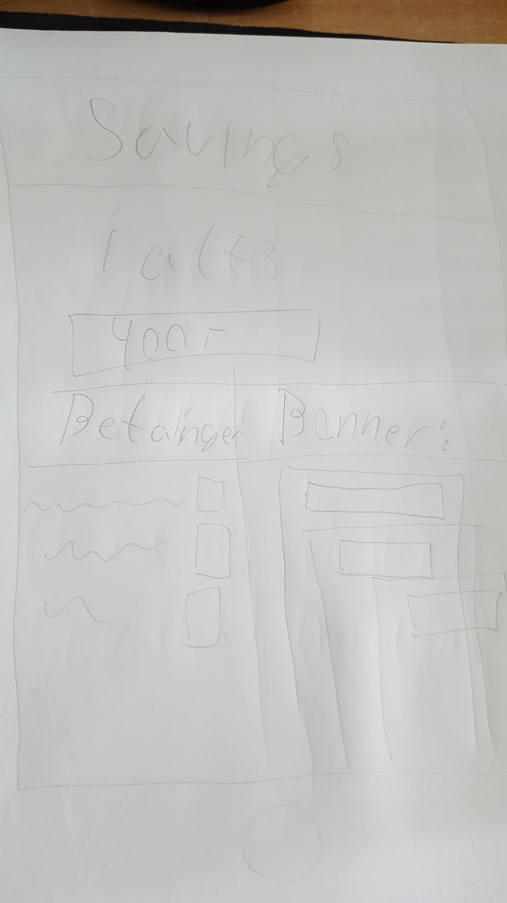
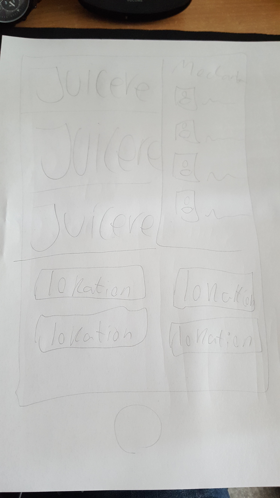
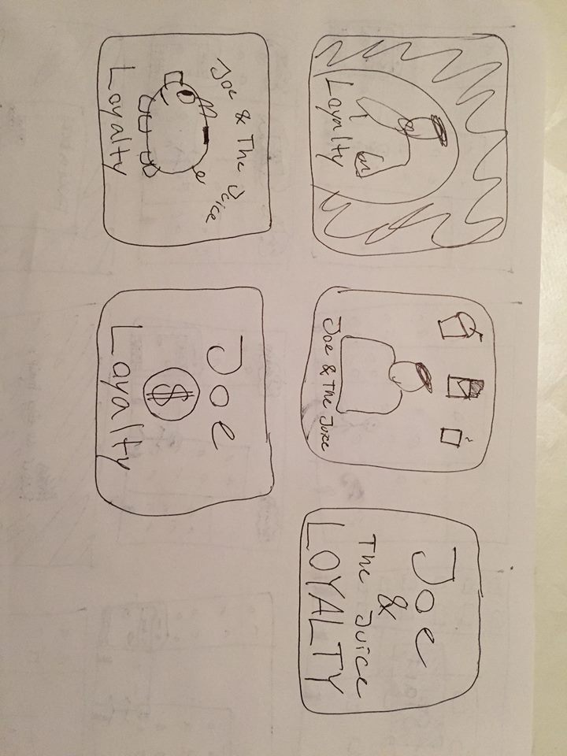
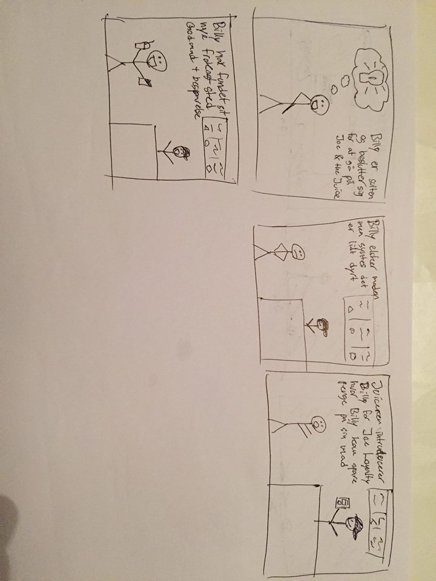

Design Charette
Her kan man se hvilke beslutninger der er kommet ud af dagens design charette.
Design regler for appen:
- Vi vil ungå feature creep, og sørge for at appen kun skal kunne bruges til Joe & the juice, og intet andet.
- Vi holder designet rent, og matcher deres stil og foto-stil.
- Appen skal have nogle fastlagte features (Se AOF).
Ud fra dette har vi nogle fast guide-lines til at kunne ud arbejde nogle idéer.
Design Skitser
I forbindelse med denne charette, har vi udarbejdet nogle skitser, med hver deres idé for hvad appen skal kunne, og hvordan den skal se ud.
 her ses nogle af de eksempler som vi nåede frem til vi ville bruge, som dagens juicer, og savings tab, hvor man kan se hvor meget man har sparet.
 Her er lidt flere eksempler på hvordan appen kunne have set ud.